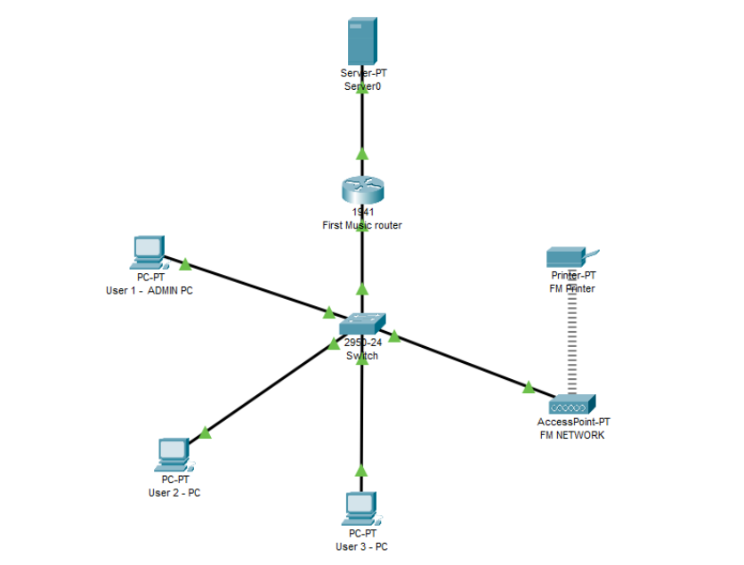

Unit 11: Computer Networks
Designed and built a small LAN in Packet Tracer featuring:
- Router–switch–PC topology with a wireless AP and printer.
- Configured IP addressing, DHCP, and basic routing.
- Tested connectivity and network troubleshooting commands.
Network Diagram
